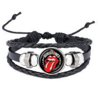
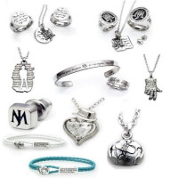
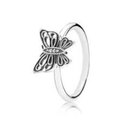
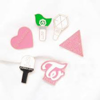

🌼 Jardim encantado 🌼
🔎 Nossa história 🔎
Quem não gosta de música e compras? E quando os dois se unem? Sempre sonhamos em criar um ambiente que unisse essas duas coisas e então nasceu a "Jardim encantado", uma loja totalmente cool e divertida para você visitar e se identicar.
🤘 Sessão de Rock 🤘
Quem nunca teve a fase de só escutar rock? Se você não teve então foi adolescente errado, mas caso você tehha sido, que tal um acessório que te lembre...calma deixa nós pensarmos um pouco 🤔 ROLLING STONES!!!!

🎶 Sessão de Pop 🎶
Pop, um dos gêneros favoritos dos jovens, adultos e ouvimos falar que até de alguns idosos 🤭 então que tal você ter algo que lembre figuras emblemáticas, como nosso rei do pop, veja algumas coisas dele 🧟

🎸 Sessão de Indie 🎸
chegou a sessão dos alternativos 🖤. Impossível falar dele sem citar Lana Del Rey e já dizia ela "happiness is a butterfly..."

📀 Sessão de Kpop 📀
O queridinho do momento 🤩 Kpop, a Ásia anda cada vez mais famosa em quesito música, então que tal broches do seu grupo favorito?
